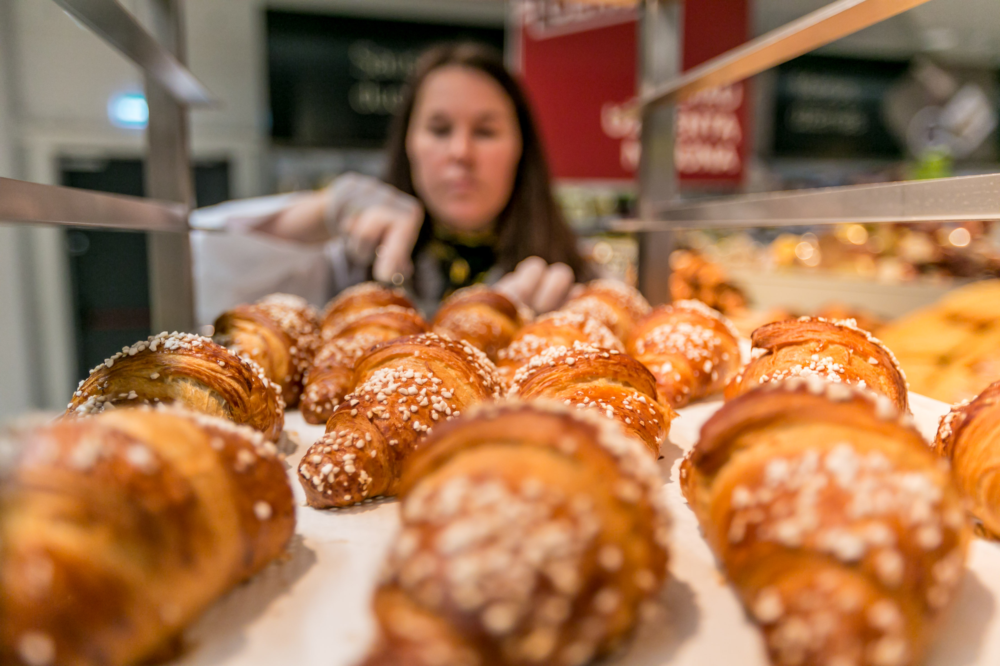
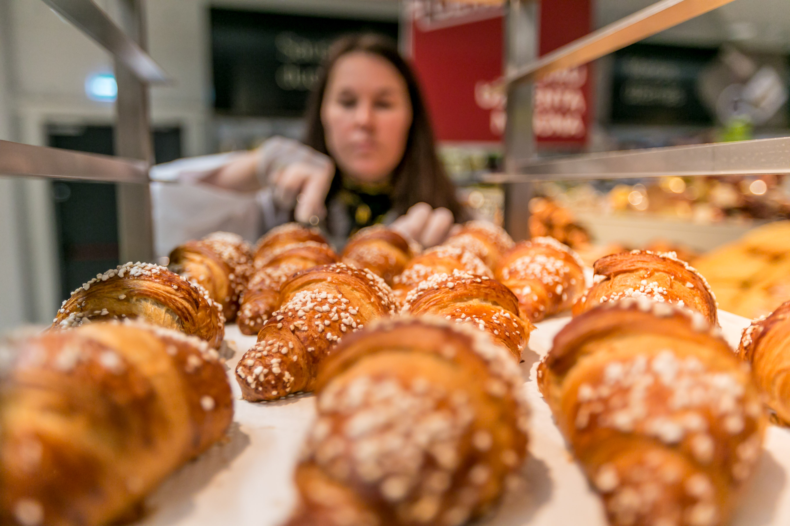

Crustum
2020.10.29 10:59

Apie mus Franšizė
Gaminiai
Pyragai Užkandžiai Sausainiai Kava Bandelės Duona Tortai Gaminiai KontaktaiSiekdami pagerinti Jūsų naršymo kokybę, statistiniais tikslais šioje svetainėje naudojame slapukus (angl. „cookies“). Jeigu sutinkate, jog Jums naršant naudotumėme slapukus, prašome paspausti SUTINKU .
Bandelės
Grįžti atgalKruasanas
Kruasanai - klasikiniai prancūziški sviestiniai rageliai. Švieži ir skanūs išlieka visą dieną, tačiau niekas nepranoksta dar šilto - su traškia auksine plutele ir po ja pasislėpusiais minkštutėlias sluoksniais.
Gaminyje gali būti šių alergenų:
Kviečių Kiaušinių100 g produkto maistingumas:
Energinė vertė 459 kcal Riebalai 23,94 g Sočiųjų riebalų rūgštys 12,1 g Angliavandeniai 51,51 g Cukrus 4,5 g Baltymai 9,32 g Druska 1,0 gAmerikietiška spurga
Amerikietiška spurga traškis
Amerikietiška spurga Pistacija
Amerikietiška spurga Oreo
Amerikietiška spurga Braškė
Amerikietiška spurga Apelsinas
Varškės spurgytės
Spurga su džemu
Austriška spurga
Bemielė sluoksniuota bandelė su grybais
Bemielė sluoksniuota bandelė su špinatais ir sūriu
Bemielė sluoksniuota bandelė su sūriu
Kruasanas su marcipanais
Kruasanas su karamele
Kruasanas su šokoladu
„Sraigė“ vanilinė bandelė
„Cinnabon“ bandelė
Sluoksniuota bandelė su varške ir slyvomis
Sluoksniuota bandelė su vyšniomis
Sluoksniuota bandelė su varške
Sluoksniuota bandelė su obuoliais
„Buenos dias“ bandelė
Ragelis su grietinėle
Pagrindinis Apie mus Franšizė Gaminiai Žaliavos Kontaktai© 2018 UAB GUSTUM
Made by mancanweb
- MANTINGA | Produktai
- Naminiai kruasanai - DELFI Gyvenimas
- Sviestiniai rageliai (kruasanai) paprasčiau | NUOTRAUKOS ...
- Ar vartotinas žodis „kruasanas“? - VLKK
- Kruasanai - Saldu Saldu
- kruasanas Archives - Atrask Skonį
- Kruasanas su kiaulienos kumpeliu - Atrask Skonį
- Kruasanas - Crustum
- Kruasanai su šokoladu (iš šaldytos sluoksniuotos bemielės ...
- Jo didenybė kruasanas: prancūzų numylėtinis, pavergęs ir ...
- MANTINGA | Produktai
Šiandieną gaminame traškius sluoksniuotos tešlos sviestinius pyragėlius - kruasanus. Tešlą gaminsime patys, todėl nedelsdami pradėkime!
- Naminiai kruasanai - DELFI Gyvenimas
Taip, vartotinas. Kruasanas (pranc.croissant), prancūziškas ragelis (Tarptautinių žodžių žodynas, Vilnius, 2013, p. 458).„Kalbos patarimuose. Kn. 4: Leksika ...
- Sviestiniai rageliai (kruasanai) paprasčiau | NUOTRAUKOS ...
Kaip ir sakiau – kruasanas, puodelis kavos, stiklainėlis mėgstamo džemo, gal dar mylima muzika ar netikėti saulės spinduliai už lango – ir tai bus skanios akimirkos, kurias dar ilgai norėsis nešiotis širdy. Nes maži dalykai yra dideli dalykai, nes skanios akimirkos kuria istorijas, nes naminiai kepiniai visada yra patys ...
- Ar vartotinas žodis „kruasanas“? - VLKK
„Šviežias kruasanas turi traškėti, o viduje turi matytis daugybė plonų sluoksnių. Ką tik iškeptas ir dar šiltas kruasanas yra nuostabaus skonio. Jame visuomet jausite lengvą sviesto skonį, jis bus purus, minkštas ir žavės savo meistriška sluoksnių struktūra“, – dalijosi ji.
- Kruasanai - Saldu Saldu
Virimo kruasanas su sūriu: 1 žingsnis: kepkite tešlą. Pirmiausia reikia paruošti mieles, kurios bus kruasanų testo pagrindas. Paimkite 50 ml anksčiau virinto ir atvėsinto vandens. Supilkite skystį į gilią plokštelę ir įpilkite į jį šaukštelį granuliuoto cukraus ir mielių. Palikite juos 10–15 minučių kambario temperatūroje.
- kruasanas Archives - Atrask Skonį
DELFI - Lengvi ir gardūs – tarsi mylimojo bučinys – prancūziški raguoliai gana paprastai pagaminami ir namuose. Ir visai nereikia kas kartą jų užsimanius vykti į Prancūziją.
- Kruasanas su kiaulienos kumpeliu - Atrask Skonį
Kruasanas su mocarela 2,6 € / vnt. Kruasanas su rūkyta lašiša 2,4 € / vnt. Meniu Desertai Užkandžiai Galerija. Paslaugos Individualūs užsakymai Pristatymas Įrankių, indų nuoma. Saldu Saldu Apie mus Dažniausiai užduodami klausimai Idėjos. Susisiekite Tel. +370 (605) 60 115
- Kruasanas - Crustum
Kruasanas su karamele ir riešutais – atitinka naujus, sugriežtintus mokinių maitinimui keliamus reikalavimus Karamelė – niekad neatsibostanti klasika, ji lyg klasikos ikona, kurios skoniui atsispirti gali tik vienetai, ne veltui, tai vienas
- Kruasanai su šokoladu (iš šaldytos sluoksniuotos bemielės ...
Kruasanai | Video receptas - patiekalas, kurį nesunkiai pasigaminsite pagal šį receptą. Daug gerų, išbandytų receptų, kuriuos privalai išmėginti!
- Jo didenybė kruasanas: prancūzų numylėtinis, pavergęs ir ...
Kruasanas. 2,00 € su uogiene ir sviestu . PRADŽIAI. Marinuotos alyvuogės. 4,50 € Sezoninė sriuba. 4,00 € Matje silkė su švediška bulve, varškės ir burokėlių kremu. 7,50 € Ispaniškos menkės ir bulvių spurgytės. 5,90 € su sepijų rašalu ir ajoli majonezu .
Šiandieną gaminame traškius sluoksniuotos tešlos sviestinius pyragėlius - kruasanus. Tešlą gaminsime patys, todėl nedelsdami pradėkime!
Taip, vartotinas. Kruasanas (pranc.croissant), prancūziškas ragelis (Tarptautinių žodžių žodynas, Vilnius, 2013, p. 458).„Kalbos patarimuose. Kn. 4: Leksika ...
Kaip ir sakiau – kruasanas, puodelis kavos, stiklainėlis mėgstamo džemo, gal dar mylima muzika ar netikėti saulės spinduliai už lango – ir tai bus skanios akimirkos, kurias dar ilgai norėsis nešiotis širdy. Nes maži dalykai yra dideli dalykai, nes skanios akimirkos kuria istorijas, nes naminiai kepiniai visada yra patys ...
„Šviežias kruasanas turi traškėti, o viduje turi matytis daugybė plonų sluoksnių. Ką tik iškeptas ir dar šiltas kruasanas yra nuostabaus skonio. Jame visuomet jausite lengvą sviesto skonį, jis bus purus, minkštas ir žavės savo meistriška sluoksnių struktūra“, – dalijosi ji.
Virimo kruasanas su sūriu: 1 žingsnis: kepkite tešlą. Pirmiausia reikia paruošti mieles, kurios bus kruasanų testo pagrindas. Paimkite 50 ml anksčiau virinto ir atvėsinto vandens. Supilkite skystį į gilią plokštelę ir įpilkite į jį šaukštelį granuliuoto cukraus ir mielių. Palikite juos 10–15 minučių kambario temperatūroje.
DELFI - Lengvi ir gardūs – tarsi mylimojo bučinys – prancūziški raguoliai gana paprastai pagaminami ir namuose. Ir visai nereikia kas kartą jų užsimanius vykti į Prancūziją.
Kruasanas su mocarela 2,6 € / vnt. Kruasanas su rūkyta lašiša 2,4 € / vnt. Meniu Desertai Užkandžiai Galerija. Paslaugos Individualūs užsakymai Pristatymas Įrankių, indų nuoma. Saldu Saldu Apie mus Dažniausiai užduodami klausimai Idėjos. Susisiekite Tel. +370 (605) 60 115
Kruasanas su karamele ir riešutais – atitinka naujus, sugriežtintus mokinių maitinimui keliamus reikalavimus Karamelė – niekad neatsibostanti klasika, ji lyg klasikos ikona, kurios skoniui atsispirti gali tik vienetai, ne veltui, tai vienas
Kruasanai | Video receptas - patiekalas, kurį nesunkiai pasigaminsite pagal šį receptą. Daug gerų, išbandytų receptų, kuriuos privalai išmėginti!
Kruasanas. 2,00 € su uogiene ir sviestu . PRADŽIAI. Marinuotos alyvuogės. 4,50 € Sezoninė sriuba. 4,00 € Matje silkė su švediška bulve, varškės ir burokėlių kremu. 7,50 € Ispaniškos menkės ir bulvių spurgytės. 5,90 € su sepijų rašalu ir ajoli majonezu .
 
